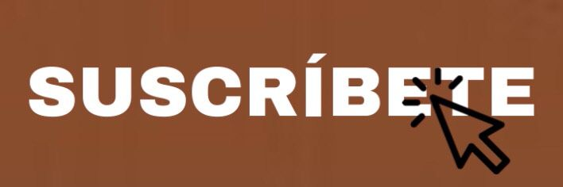

ADYG-FASHION
¡Bienvenido! En ADYG-FASHION veras una amplia gama de ropa a la moda para mujer, hombre y niños todo a la moda.
Exponemos a continuación los datos más destacados de “Collection Review: ADYG-Fashion”, un informe de tendencias
elaborado por ADYG:
Tal como se anticipó, las marcas Premium están respondiendo a un mercado cauteloso ampliando su gama de tonos básicos.
Los datos de ADYG confirman que el negro sigue siendo el color dominante (-2% interanual).
Sin embargo, las marcas de moda están apoyando el marrón (+10% interanual) con el máximo crecimiento registrado
en los vestidos. Los tonos neutros también se mantienen fuertes, aumentando un 18% interanual.
MISIÓN
Ofrecemos una moda de cualidad accesible a varios clientes al precios muy atractivos. Podemos ofrecer a nuestros
clientes una opción mas sostenible.
VISIÓN
Nuestra visión es que todas las operaciones de nuestra actividad se realicen de un modo económico, social y
medioambientalmente sostenible.
Esto significa que nuestra actividad debe contribuir a satisfacer las necesidades
de generaciones presentes y futuras.
Creemos que es posible diseñar y vender moda de calidad a un precio asequible
y de manera social y medioambientalmente responsable.
Con esta idea en mente, nuestra idea comercial es sencilla: ofrecer moda
y calidad al mejor precio.
Nuestra visión es orientada en el futuro, una internacionalización es decir implantar tiendas en el mundo.
VALORES
Creer en la persona, ser un solo equipo, ser directo y tener la mente abierta, franqueza, hacerlo sencillo,
actitud
emprendedora, ser conscientes de los costes y también el desarrollo sostenible.
NOTICIAS ADYG-FASHION
Suscríbase a nuestro Newsletter y reciba actualizaciones sobre eventos,
colecciones y promociones exclusivas.

CONTACTANOS